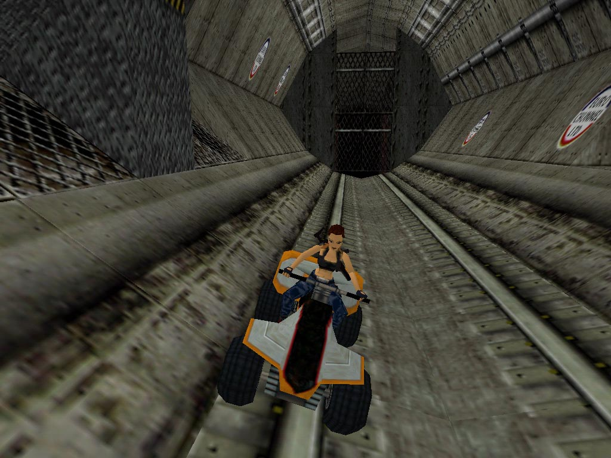
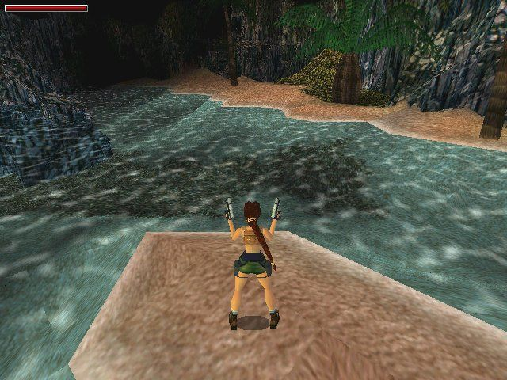
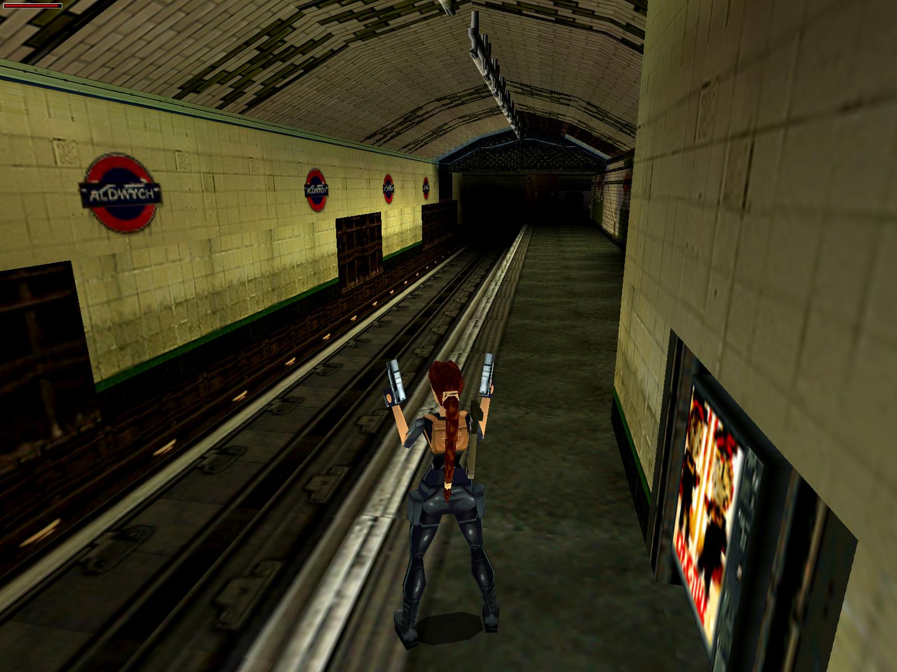
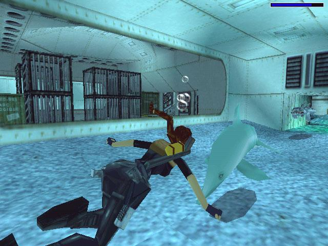

Lara Croft returns in another action-packed adventure.
We pick up her trail in India, where she's hunting for a missing artifact,
the Infada Stone. While following the Ganges downriver, she runs into a Scottish scientist,
one Dr. Willard, who is also looking for the stone.
He informs her that it is actually one of four artifacts carved from an ancient meteorite.
The search for the remaining artifacts takes her to London,
a tropical island in the South Pacific, then to Nevada's Area 51. After finding all the artifacts,
Lara heads for Antarctica, where the plot thickens.




Millions of years ago, a meteor crashed to Earth,
landing in Antarctica, then a tropical paradise. Today,
the same area is being excavated by the research company RX Tech,
who are picking up unusual readings from the meteorite's impact zone.
It is here that they uncover the body of a sailor who served on
Charles Darwin's expedition on the H.M.S. Beagle. A few of the sailors
had apparently explored the crater's interior.
Following clues from the sailor's journal, the researchers have
expanded their search beyond the impact crater to other parts of the
globe, where the Beagle's crew subsequently traveled...and died.
One of these places is India, where Lara is currently searching for
the Infada Stone. Unaware of its true history, she only knows that in
local beliefs it was supposed to hold great powers. Soon she will
discover much more.... I believe the story and gameplay stand the test of time.